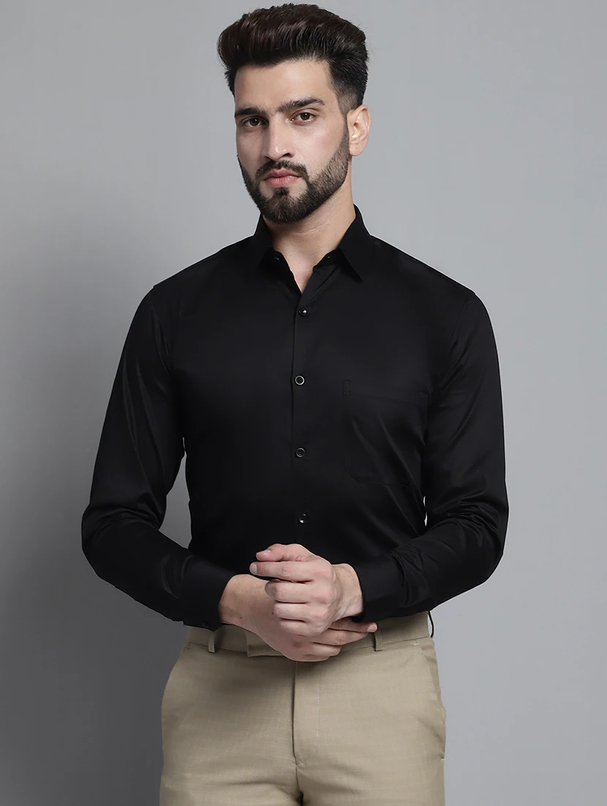
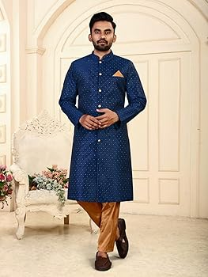

Men's clothing encompasses a variety of styles and garments suited for different occasions, from formal events to casual outings. Here’s a summary of some common types of men's attire:
1. Casual Wear:
T-Shirts: Simple, comfortable tops typically made of cotton or blends, often worn casually or for informal activities.
Polo Shirts: Collared shirts with a button placket, offering a slightly more polished look than a t-shirt, suitable for casual and smart-casual settings.
Jeans: Durable, versatile pants made from denim, commonly worn for casual outings.
Chinos: Lightweight, cotton trousers that provide a slightly dressier alternative to jeans.
2. Business Casual:
Button-Down Shirts: Shirts with a collar and buttons, available in various patterns and colors, suitable for a professional yet relaxed look.
Sweaters and Cardigans: Knitwear worn over shirts, adding warmth and a touch of sophistication.
Blazers: Tailored jackets that add a polished touch to casual outfits, often paired with dress pants or chinos.

Suits: A matching set of trousers and a jacket, often worn with a dress shirt and tie. Suits can be single-breasted or double-breasted and come in various fabrics like wool and polyester.
Dress Shirts: Formal shirts with a collar and button closure, typically worn under a suit jacket.
Ties and Bow Ties: Neckwear used to complement formal outfits, available in various styles, patterns, and materials.
Dress Pants: Tailored trousers that match with a suit jacket for formal occasions.
Dress Shoes: Polished shoes, often made of leather, including styles such as Oxfords, Brogues, and Loafers.

4. Outerwear:
Jackets: Include styles like bomber jackets, denim jackets, and windbreakers, providing various levels of warmth and protection.
Coats: Include overcoats, trench coats, and peacoats, designed for colder weather and formal occasions.
5. Specialty Attire:
Sportswear: Includes garments like tracksuits, sports shorts, and activewear designed for athletic activities and casual wear.
Workwear: Durable clothing like overalls and utility jackets, often worn for manual labor or trades.
6. Traditional and Cultural Attire:
Kurta: A traditional South Asian garment, typically a long tunic worn with trousers or a lungi.
Kilt: A traditional Scottish garment, a knee-length skirt-like piece worn with a plaid pattern.